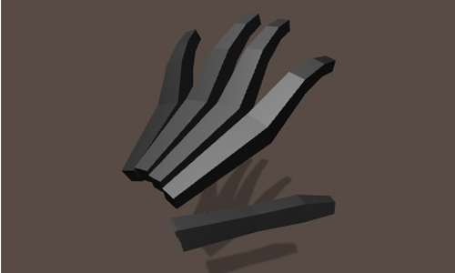

Hand Assets¶
The Leap Motion core assets for Unity include a number of pre-made hand prefabs assets. You can use these prefabs as-is, modify them, or create your own.
There are a few different approaches to creating hands, including creating discrete components for the parts of the hands and moving these parts individually, creating mesh hands rigged with bone armatures and deforming the mesh by rotating the bones, and even creating code-driven hands that procedurally create their own graphics. The existing prefabs use all three of these approaches.
The HandController class orchestrates the acquisition and application of tracking data to the hands and fingers. The HandModel and FingerModel classes serves as the base for animating the hand and fingers. There are several classes extending HandModel and FingerModel to implement the specific types of animation. These specific classes, like SkeletalHand/Finger and RiggedHand/Finger, can be used for multiple hand designs as long as the objects to which they are attached follow the same basic structure.
| Hand Type | Prefabs | Scripts | Example |
|---|---|---|---|
| Procedural Hands | PolyHand1/2/3, DebugHand | PolyHand/Finger, DebugHand/Finger |  |
| Component Hands | MinimalHand, CleanRobotHand, GlowRobotHand | SkeletalHand/Finger | |
| Rigged Hands | All the human models | RiggedHand/Finger | |
| Physics Hands | RigidHand, RigidFullHand, RigidRoundHand, ThickRigidHand | RigidHand/Finger |
Setting Up Hand Assets in the Hand Controller¶
After adding a HandController to a scene, you can set the graphics model by dragging the desired hand prefab to the Hand Graphics Model slots.
If the Separate Left/Right setting is checked, you can use different prefabs for the right and left hands. Otherwise, the HandController mirrors a single model for both hands. The existing hand prefabs are all labeled “right” or “left” where it makes a difference (if you use the wrong hand model, the error will be obvious).
Change the size of the hands using the HandController Scale value. A scale of 1.0 is life-size, but that is often too small. It really depends on your scene. The edges of the default Unity cube, for example, are 1 meter long and would dwarf a life-size hand. Scaling the hand larger also increases their range of motion. You can further increase the range of motion without making the hands larger by increasing the HandController Hand Movement Scale values.
Setting the Is Head Mounted will provide a hint to the Leap Motion service that hands are viewed from the head-mounted position and improve hand recognition. The setting does not automatically rotate the hands in the game to appear in front of the HandController rather than above it. To do that, you can set the HandController rotation values to {x=270, y=180, z=0}.